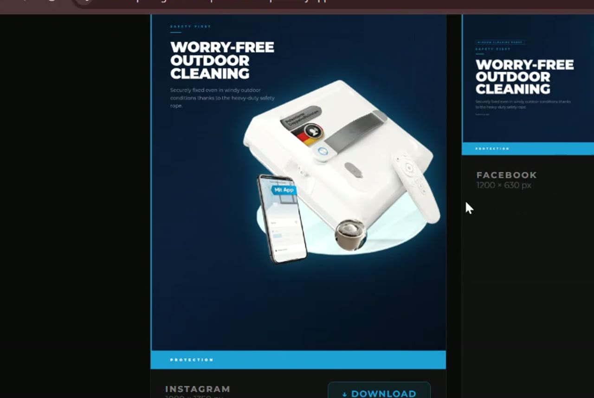

A website that answers, qualifies and books — 24/7.
Most websites wait for visitors to figure things out. I build sites with a built-in AI assistant that answers questions in your voice, qualifies leads and books calls straight into your calendar.
A website with a brain built in — not just pages, but a 24/7 digital employee
A traditional website is a brochure. An AI-powered website is a team member. I integrate Claude AI directly into your web presence — giving your site the ability to understand visitor intent, answer questions in your voice, pre-qualify leads, recommend products, book appointments, and escalate high-value prospects to you instantly.
Whether it's a coaching platform that pre-qualifies discovery calls, an e-commerce store with AI product recommendations, or a SaaS site with an intelligent onboarding assistant, I design the full experience — from fast-loading frontend to AI-connected backend — with conversion as the north star.
The result is a website that works as hard at 3am as it does at 3pm, dramatically increasing engagement, reducing manual inbox triage, and turning more visitors into paying clients.
AI capabilities I embed into your site
Not just a chatbot widget. Real AI functionality that replaces manual work and drives revenue.
AI Chat Assistant
A site-aware Claude assistant trained on your products, services, FAQs, and tone — answering visitor questions instantly, 24/7, in your voice.
Lead Qualification Engine
AI-driven conversation flows that assess visitor intent, budget, and fit — routing hot leads to booking pages and soft leads to nurture sequences automatically.
Product Recommendation AI
For e-commerce — an AI engine that analyses browsing behaviour and purchase history to surface personalised product suggestions and increase average order value.
Booking & Scheduling AI
AI that pre-qualifies prospects and books discovery calls directly into your calendar — only scheduling meetings with people who meet your criteria.
Dynamic Content Generation
AI-powered sections that generate personalised content based on visitor location, referral source, or previous interactions — increasing relevance and time-on-page.
CRM & Backend Sync
Every AI interaction is logged — contact details, conversation summaries, intent signals — automatically synced to your CRM or email platform via API or Zapier/n8n.
From static site to intelligent digital presence
A structured process that delivers a website with measurable business impact, not just beautiful design.
Map the journey
We define your ideal visitor, the decision path they follow, and the moments where AI can intervene to answer, qualify, or convert. Every AI feature is tied to a business outcome — not added for novelty.
Design, develop, integrate
I design a fast, high-converting website and integrate the AI layer — training the assistant on your content, wiring the backend, and connecting to your CRM and booking systems. Everything is tested against real user scenarios.
Go live, keep improving
After launch, I monitor AI conversation logs, refine the assistant's responses, and optimise conversion paths based on real data. Your site gets smarter over time, not static like a typical handoff.
Websites built to convert

Client projectCustom AI ToolLukonix — AI Product Image Generator
The problemProducing on-brand product visuals for a robotic window cleaner took manual design work for every single image.
Manual design time cut by over 80%
Keystone — Lead Capture Funnel
The problemA property manager needed a steady flow of qualified owner leads instead of cold enquiries.
38 qualified consultations booked in the first 30 days from Google Ads traffic
Norrland — Outdoor Ecommerce Store
The problemAn outdoor brand needed a store that felt premium and made it effortless to browse and buy.
Complete e-commerce storefront delivered with full category browsing and product detail functionality
Meridian — Revenue Analytics Platform
The problemA finance team was rebuilding revenue reports in spreadsheets every month.
Finance team adopted the platform on day one — no training required